Control elements for power converters
Extends from Modelica.Icons.Package (Icon for standard packages).
| Name | Description |
|---|---|
| 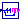 SignalPWM | Generates a pulse width modulated (PWM) boolean fire signal |
| 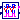 SwitchingCPM | Current Peak Mode modulator for switching models |
| 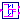 DeadTime | Introduces a dead time in complementary PWM firing signals |
| 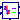 Park | Park transformation |
| 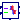 InversePark | Inverse Park transformation |
| 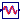 PLL | Phase-locked loop |
| 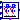 CPM_CCM | Current Peak Mode modulator for averaged CCM models |
| 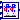 CPM | Current Peak Mode modulator for averaged models |
| Block assemblies useful in PV and power electronics | |
| Common interfaces for control blocks |
Generates a pulse width modulated (PWM) boolean fire signal

Generate boolean firing signal from duty cycle input. Adapted from SignalPWM.
Extends from Modelica.Blocks.Icons.Block (Basic graphical layout of input/output block).
| Type | Name | Default | Description |
|---|---|---|---|
| Real | dMax | 1 | Maximum duty cycle |
| Real | dMin | 0 | Minimum duty cycle |
| Frequency | fs | Switching frequency [Hz] | |
| Time | startTime | 0 | Start time [s] |
| Type | Name | Description |
|---|---|---|
| input RealInput | vc | Control voltage |
| output BooleanOutput | c1 | Firing PWM signal |
Current Peak Mode modulator for switching models
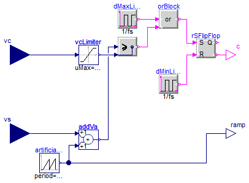
Current-programmed mode (CPM), i.e. Peak Current Mode modulator switching model. Generates PWM signal based on sensed current signal vs and control current signal vc. Also outputs the artificial ramp signal.
Model taken from EM01 and EMA16.
Extends from Modelica.Blocks.Icons.Block (Basic graphical layout of input/output block).
| Type | Name | Default | Description |
|---|---|---|---|
| Real | dMin | 0 | Minimum duty cycle |
| Real | dMax | 1 | Maximum duty cycle |
| Frequency | fs | Switching frequency [Hz] | |
| Time | startTime | 0 | Time instant of first pulse [s] |
| Voltage | Va | Amplitude of artificial ramp [V] | |
| Voltage | vcMax | Maximum control voltage [V] |
| Type | Name | Description |
|---|---|---|
| input RealInput | vc | Control voltage |
| input RealInput | vs | Sensed voltage |
| output BooleanOutput | c | Boolean firing signal |
| output RealOutput | ramp | Artificial ramp signal |
Introduces a dead time in complementary PWM firing signals
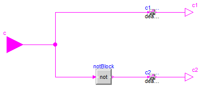
Given an input boolean firing signal, output that signal and it's complement with deadTime seconds of dead time.
Extends from Modelica.Blocks.Icons.Block (Basic graphical layout of input/output block).
| Type | Name | Default | Description |
|---|---|---|---|
| Time | deadTime | 0 | Dead time [s] |
| Type | Name | Description |
|---|---|---|
| input BooleanInput | c | PWM input |
| output BooleanOutput | c1 | PWM output |
| output BooleanOutput | c2 | PWM complement |
Park transformation

Perform Park transformation. This transformation translates from the static reference frame (alfa-beta) to the synchronous reference frame (d-q).
Extends from Modelica.Blocks.Icons.Block (Basic graphical layout of input/output block).
| Type | Name | Description |
|---|---|---|
| input RealInput | alpha | |
| input RealInput | beta | |
| output RealOutput | d | |
| output RealOutput | q | |
| input RealInput | theta |
Inverse Park transformation

Perform inverse Park transformation. This transformation translates from the synchronous reference frame (d-q) to the static reference frame (alfa-beta).
Extends from Modelica.Blocks.Icons.Block (Basic graphical layout of input/output block).
| Type | Name | Description |
|---|---|---|
| input RealInput | d | |
| input RealInput | q | |
| output RealOutput | alpha | |
| output RealOutput | beta | |
| input RealInput | theta |
 PVSystems.Control.PLL
PVSystems.Control.PLL
Phase-locked loop

Phase-locked loop. Given a sinusoidal input, extract the phase.
Extends from Modelica.Blocks.Icons.Block (Basic graphical layout of input/output block).
| Type | Name | Default | Description |
|---|---|---|---|
| Frequency | frequency | 50 | [Hz] |
| Type | Name | Description |
|---|---|---|
| input RealInput | v | |
| output RealOutput | theta |
Current Peak Mode modulator for averaged CCM models
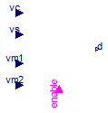
Current-Programmed-Mode controller model. Computes duty ratio based on averaged inductor current, voltages applied to the inductor, and amplitude of the artificial ramp. This CPM controller model is valid only for CCM operation of the powerconverter. All parameters and inputs are referred to the primary side.
Limitation: does not include sampling effects or preditions of period-doubling instability.
Model taken from EM01 and EMA16.
Extends from Interfaces.CPMInterface (Common interface for averaged CPM block).
| Type | Name | Default | Description |
|---|---|---|---|
| Inductance | L | Equivalent inductance, referred to primary [H] | |
| Frequency | fs | Switching frequency [Hz] | |
| Voltage | Va | Amplitude of the artificial ramp, Va=Rf*ma/fs [V] | |
| Resistance | Rf | Equivalent current-sense resistance [Ohm] | |
| Real | d_disabled | Value of duty cycle when disabled [1] |
| Type | Name | Description |
|---|---|---|
| input RealInput | vc | Control input, vc=Rf*ic |
| input RealInput | vs | Sensed average inductor current vs=Rf*iL |
| input RealInput | vm1 | Voltage across L in interval 1, slope m1=vm1/L |
| input RealInput | vm2 | (-) Voltage across L in interval 2, slope m2=vm2/L |
| output RealOutput | d | Duty cycle |
| input BooleanInput | enable | Block enable/disable |
Current Peak Mode modulator for averaged models

Current-Programmed-Mode controller model. Computes duty ratio based on averaged inductor current, voltages applied to the inductor, and amplitude of the artificial ramp. The CPM controller model is valid for CCM and DCM operation of the power converter. All parameters and inputs are referred to the primary side.
Limitation: does not include sampling effects or preditions of period-doubling instability.
Model taken from EM01 and EMA16.
Extends from Interfaces.CPMInterface (Common interface for averaged CPM block).
| Type | Name | Default | Description |
|---|---|---|---|
| Inductance | L | Equivalent inductance, referred to primary [H] | |
| Frequency | fs | Switching frequency [Hz] | |
| Voltage | Va | Amplitude of the artificial ramp, Va=Rf*ma/fs [V] | |
| Resistance | Rf | Equivalent current-sense resistance [Ohm] |
| Type | Name | Description |
|---|---|---|
| input RealInput | vc | Control input, vc=Rf*ic |
| input RealInput | vs | Sensed average inductor current vs=Rf*iL |
| input RealInput | vm1 | Voltage across L in interval 1, slope m1=vm1/L |
| input RealInput | vm2 | (-) Voltage across L in interval 2, slope m2=vm2/L |
| output RealOutput | d | Duty cycle |